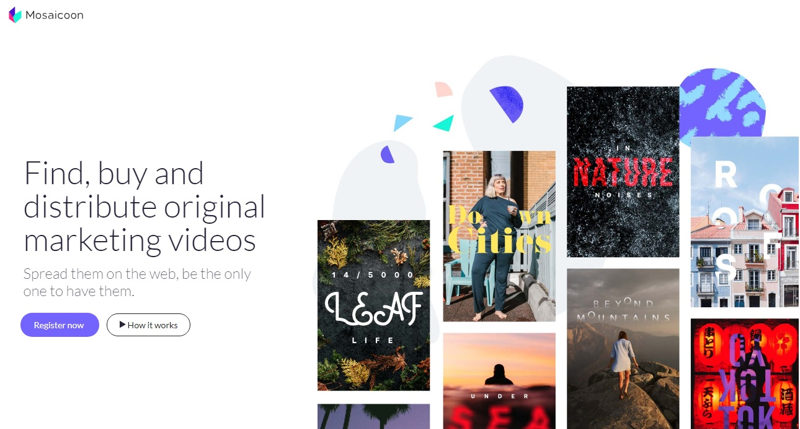

Professional experience
Taxfix, Berlin
Taxfix is one of the most successful FinTech companies in Europe, we are revolutionising the way people do their taxes.
At Taxfix we believe that everybody, regardless of their income, deserves to get the maximum out of their tax return. Taxfix allows everyone in Germany and Italy to file taxes using their smartphone, without any prior knowledge about taxes. Thanks to a strong UX focus and an intuitive conversational interface users can complete their tax return in less than half an hour.
As the Product Manager for the Italian Market I’m in charge of defining the product vision and strategy. I use both qualitative and quantitative research to understand how to bring value to Italian tax payers. I define high level requirements and I take part in the release management process
alongside delivery product teams, tax experts, UX researchers, designers and data analysts.
I’m responsible for creating alignment among management and external stakeholders, I contribute to defining the go-to-market strategy with marketing and customer service.
Talent Rider, Remote
TalentRider is a minimalistic, developers-friendly marketplace. Developers can demonstrate their coding skills solving a simple coding challenge while companies evaluate candidates skills. We created Talent Rider because we believe technical recruiting should be easier and less biased.
As founder and CPO I've been in charge of company strategy, product vision, sales, customer feedback, product marketing and design. Learn more about TalentRider.
Read about Talent Rider on Linkedin How to put developers at the center of the hiring process.
Delivery Hero, Berlin
Delivery Hero is the leading global online food ordering and delivery marketplace with number one market position in more than 40 countries.
As Technical Product Manager for the German platforms,
I've been responsible for strategy and delivery of the internal tools for Customer care and Operations.
I was in charge of defining requirements using qualitative and quantitative methods,
I worked with C-levels, engineers, designer to scope projects and identify KPIs.
Mosaicoon, Palermo

Mosaicoon was one of the most awarded Italian tech firms in Europe.
I joined Mosaicoon as employee number 4 and I helped it to become an international company with offices in Europe and Asia. During my 7 years at Mosaicoon I covered different leading roles.
As Head of Innovation I led international innovation projects related to marketing, I managed the relationship with key partners such as Facebook and Google and I designed strategies and tactics for localization of our marketing SAAS Platforms in Europe and Asia.
As Head of Technology I managed the tech team introducing OKRs, Agile methodology, cross-functional teams and micro-service architecture to allow scalability of teams and operations.
I also Supervised the creative process and technical implementation of digital marketing campaigns for clients such as Roche, Emergency, Samsung, Mtv, Jaguar.
Freelance Creative Technologist and Web Developer
From 2001 to 2009 I worked at web design and creative projects from different domains and business context. I developer 3D renderings for Yacth designers, web sites for wineries, photoshootings and Flash games. Some of my projects are available on my archive portfolio page